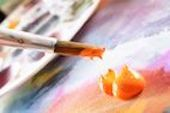
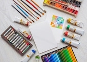

How to Start a Painting
To start a painting, you should choose a canvas to work on. This can be anything your heart desires. For example, it can be fabric, wood, a normal canvas, etc. This is up to you. I suggest for beginners, any canvas from the store will be awesome (this may change depending on paint type). Next step is to draw out what you would like to paint. These are good beginning steps to guide your painting all the way to the end.
Types of Paint
Choosing a type of paint can be easy if you know what type of look you are going for and what you like to work with. Every painting medium each provide a different texture and opacity. Along with that, each painting medium has its own way of working which includes drying time, general forgiveness, and thickness.